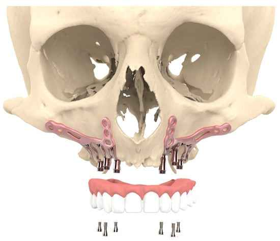
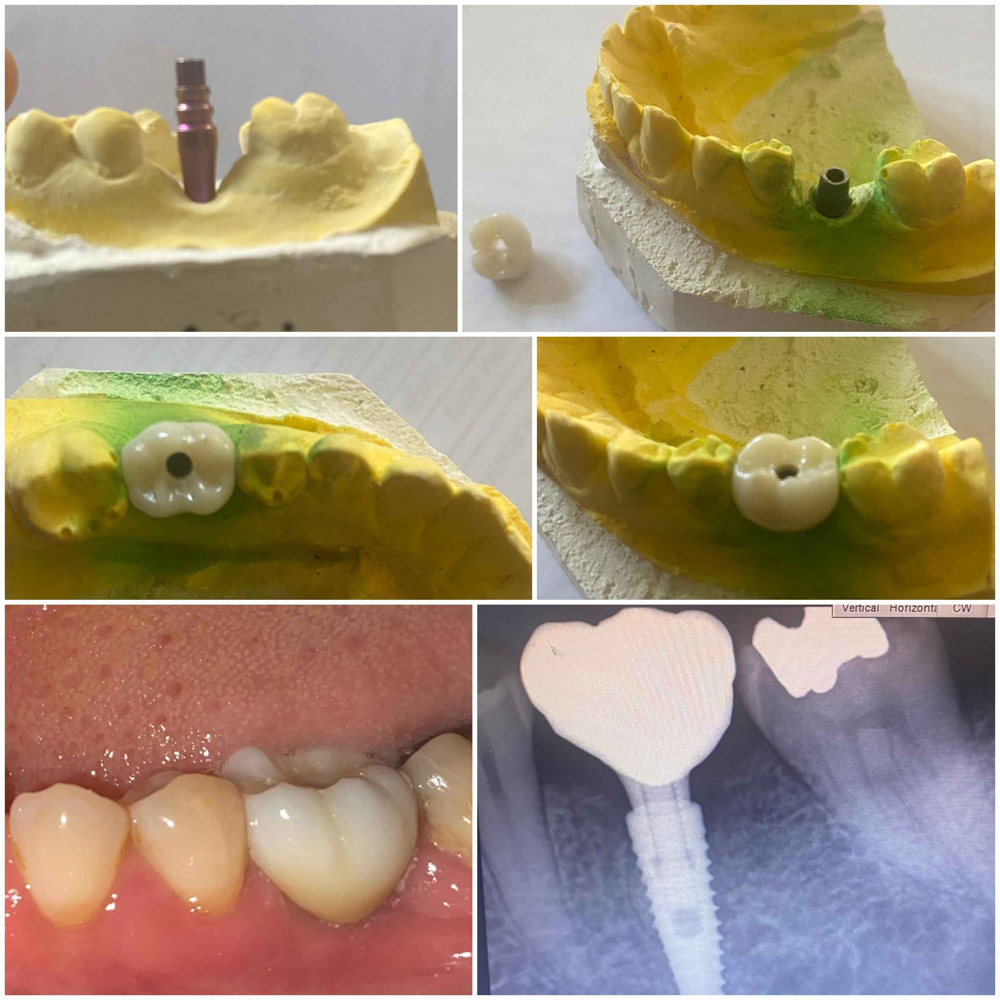
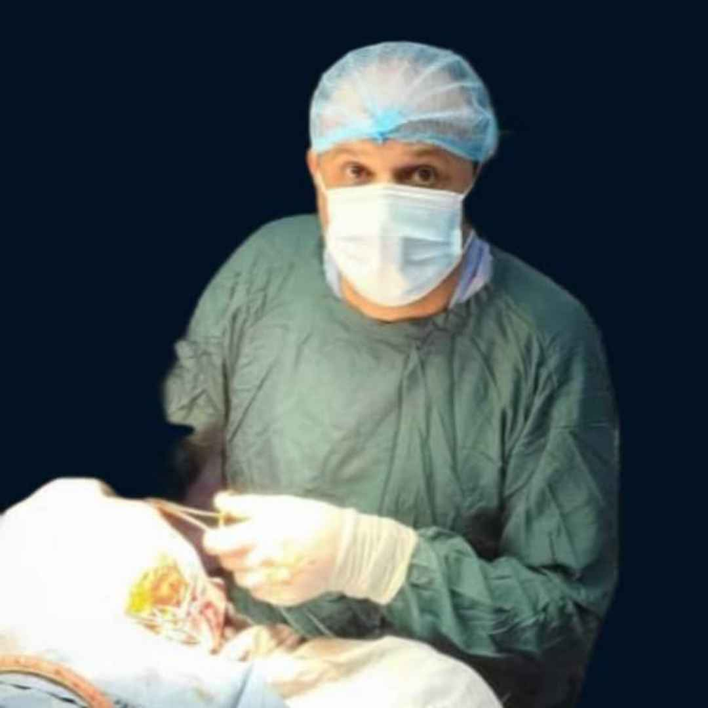
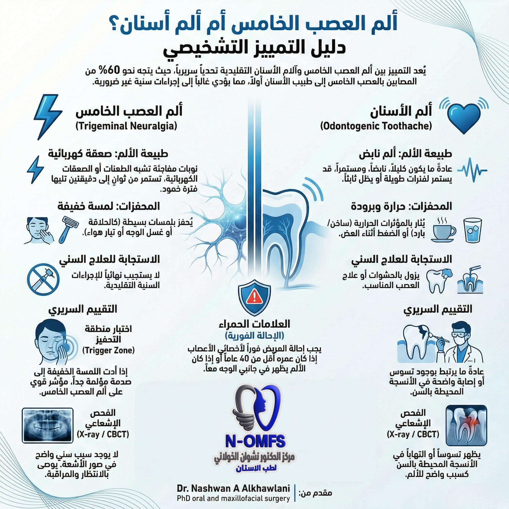
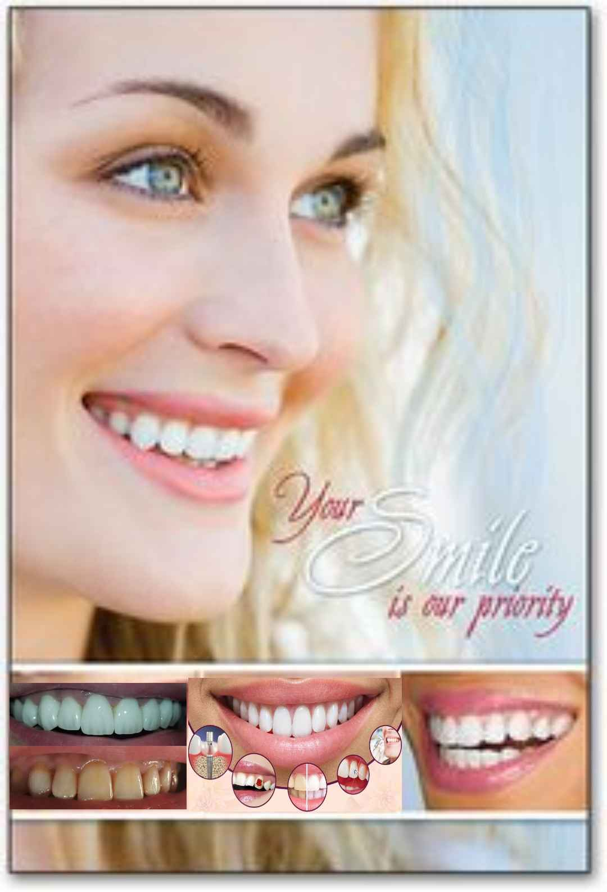
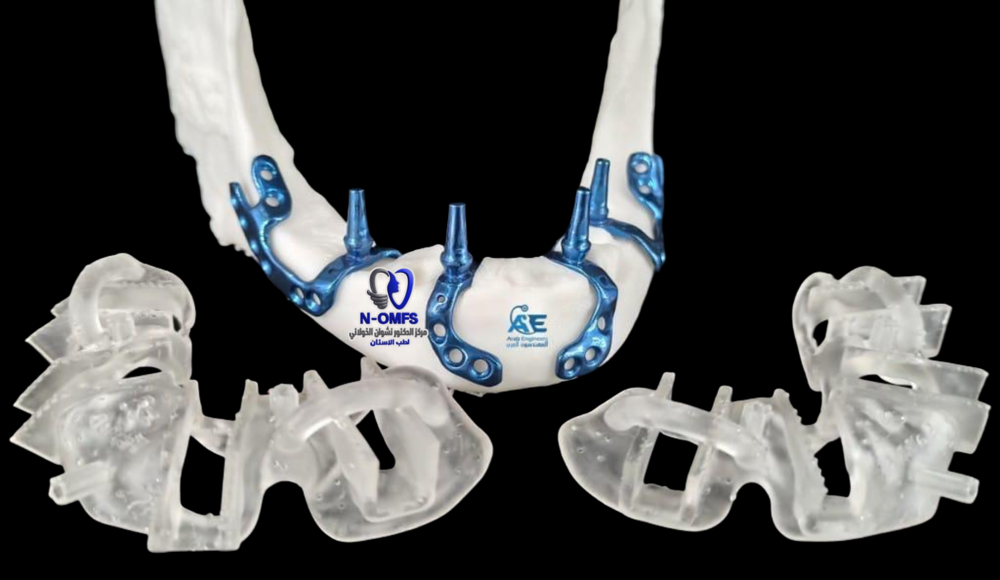
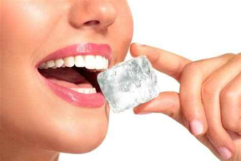
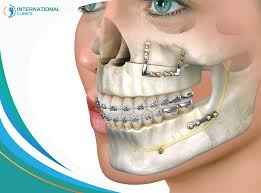

الزراعة المطبوعة ثلاثية الأبعاد
تعرف على مستقبل زراعة الأسنان وكيف يتم تصميم زرعة خصيصاً لك.
اقرأ المقال ←نجمع بين العلم الأكاديمي والخبرة الجراحية لنعيد إليك ابتسامتك بأدق التقنيات الرقمية.
استشارة تخصصية مجانية
تعويض الأسنن المفقودة باستخدام أجود أنواع الزرعات والعالمية.

علاج الحالات المعقدة، الكسور، وتصحيح انحراف الفكين جراحياً.

حلول تقويمية متطورة للأطفال والكبار للحصول على إطباق مثالي.

تعرف على مستقبل زراعة الأسنان وكيف يتم تصميم زرعة خصيصاً لك.
اقرأ المقال ←
كيف تفرق بين الصدمة الكهربائية للعصب الخامس وألم الأسنان التقليدي؟
اقرأ المقال ←
تخلص من التصبغات الداكنة واستعد حيوية ابتسامتك في جلسة واحدة.
اقرأ المقال ←
الحل السحري لتعويض الأسنان في حالات الضمور الشديد لعظم الفك العلوي.
اقرأ المقال ←
لماذا تشعر بالألم عند شرب البارد؟ وكيف نعيد لثتك لوضعها الطبيعي؟
اقرأ المقال ←